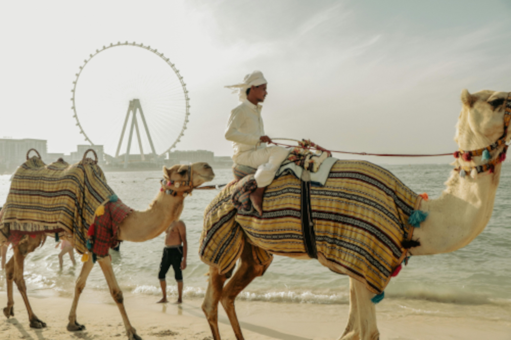
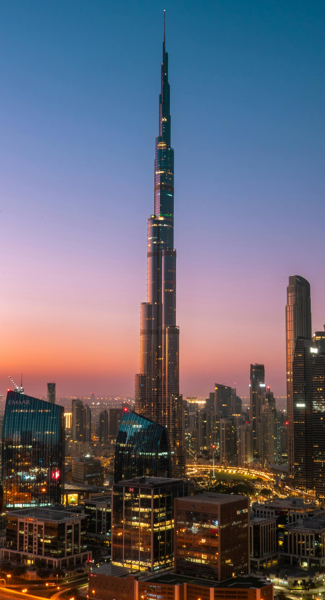
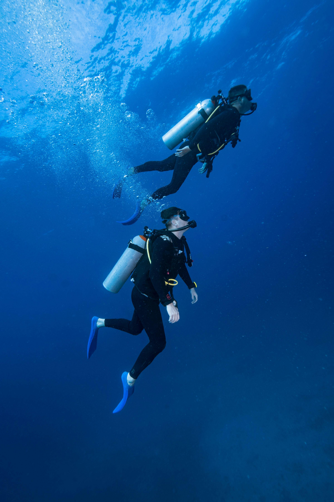
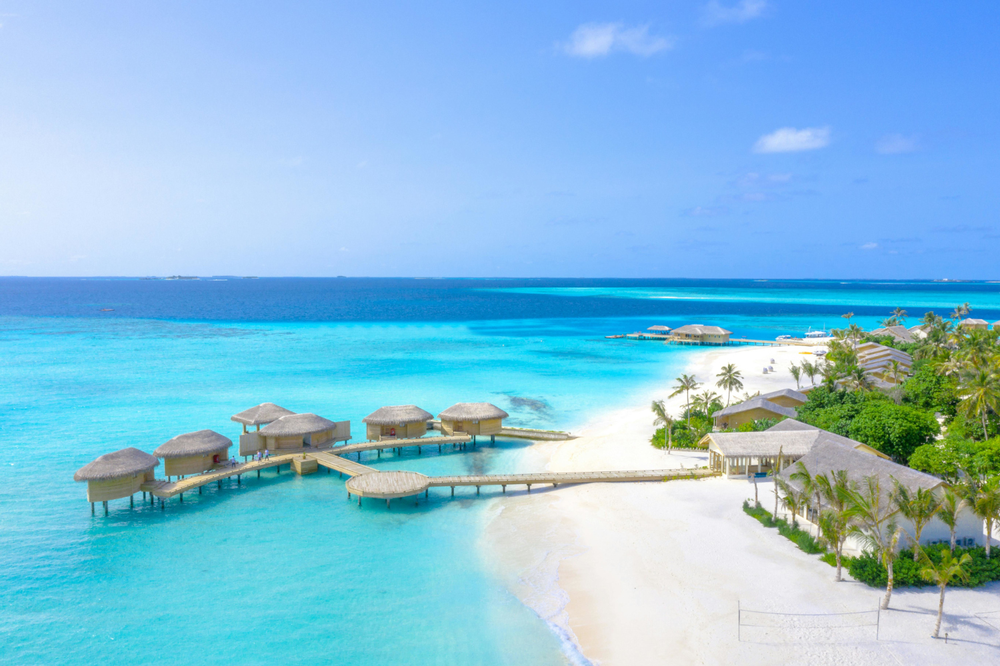
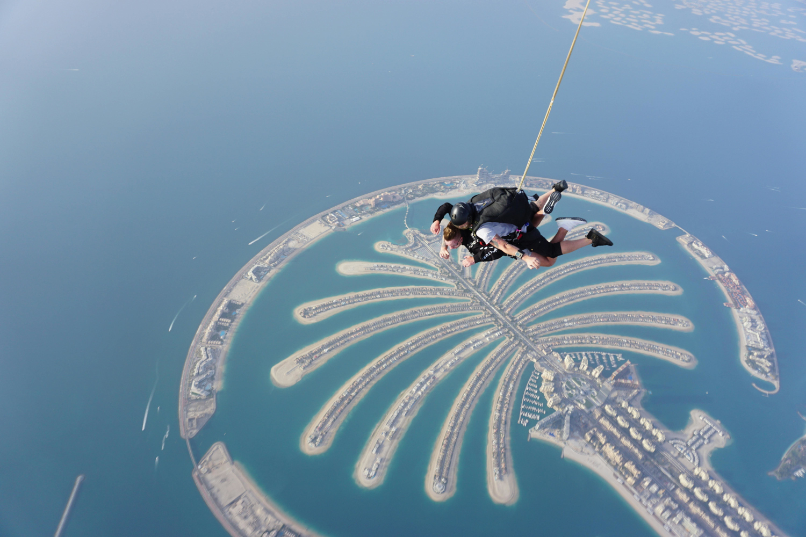
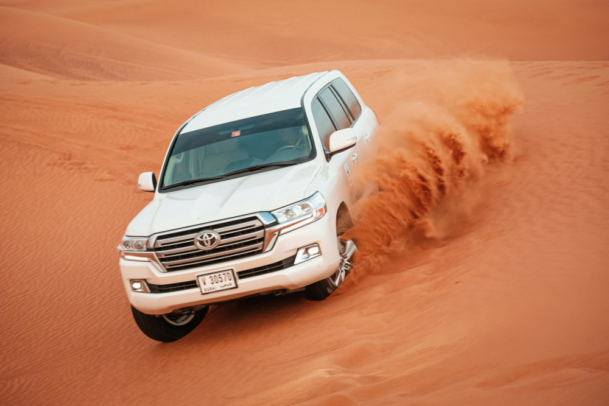
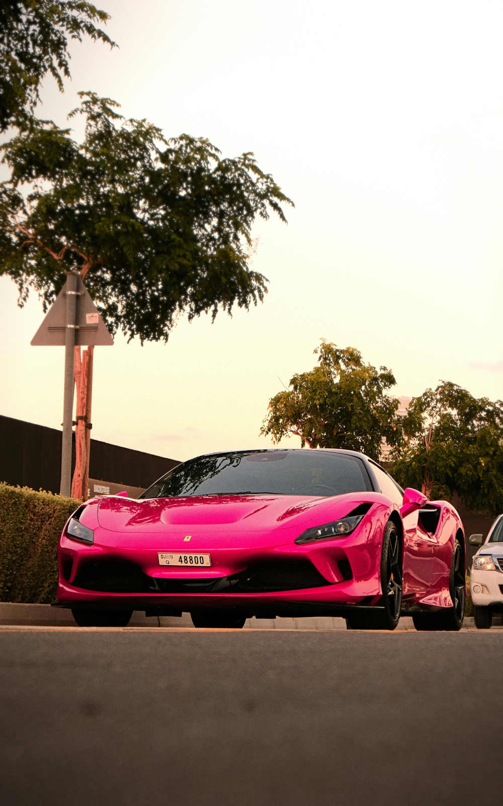
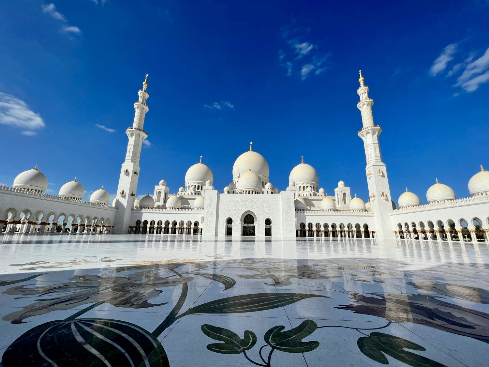
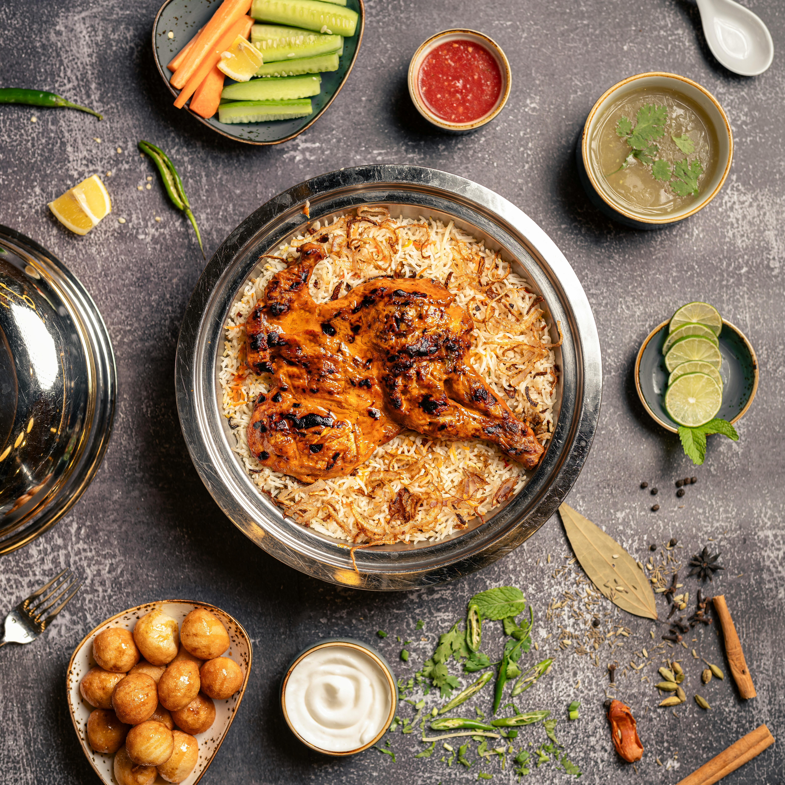

Fun things to do in UAE, Istanbul, Tbilisi, and Maldives.
Traveling opens doors to new experience, cultures, and unforgettable memories that you can capture.These beautiful places are known for their warm weather, desert sands, clear blue seas, and sky, along with a relaxing atmosphere and many fun activities, foods, and fun attractions.
These destinations are not only beautiful but are also full of different experiences that make each trip special. You can enjoy adventure, explore new cultures, taste different foods, and take in amazing views. Traveling to these places helps you learn more about the world while creating memories that you will always remember.
Explore, Entertain, Shop, Relax & More!
In the UAE, you can explore the desert, ride camels, enjoy city views from tall buildings, and visit large shopping centers with many attractions inside. Istanbul is full of history and culture where you can visit famous landmarks, walk through busy streets, enjoy local foods, and experience both European and Asian sides of the city. Tbilisi offers a calm and unique environment with colorful houses, mountain views, and places where you can relax and learn about local traditions. The Maldives is a perfect place to enjoy the ocean, swim in clear water, relax on the beach, and spend time in peaceful surroundings.

Burj Khalifa in Dubai, UAE.

The Burj Khalifa is a megatall skyscraper in Dubai - United Arab Emirates. It stands at an impressive height of 829.8 meters with its roof at 828 meters. It's named after Sheikh Khalifa bin Zayed Al Nahyan, the former president of the United Arab Emirates. It offers breathtaking panoramic views from its observation decks and stands as a symbol of modern engineering and luxury in Dubai.
Scube Diving in the Clear Blue Sea, Maldives.

Scuba diving in the Maldives is an amazing experience where you can explore the clear blue sea and see beautiful underwater life. It gives you the chance to swim with colorful fish, coral reefs, and enjoy the peaceful ocean environment. This adventure creates unforgettable memories and shows the natural beauty hidden beneath the water.
Luxury Resorts in Maldives.

Luxury resorts in the Maldives are known for their peaceful atmosphere, clear blue waters, and beautiful island views. They offer relaxing stays with overwater villas, soft white beaches, and calm surroundings that make the experience unforgettable. These resorts are perfect for enjoying comfort, nature, and a quiet escape from everyday life.
Sky Diving on Palm Jumeirah, UAE.

Skydiving in Palm Jumeirah is an exciting experience where you can enjoy breathtaking views of the city and clear blue sky while free-falling above the famous palm-shaped island. It gives a mix of thrill and beauty as you see the desert, sea, and modern buildings from high above. This adventure creates unforgettable memories and is one of the most unique ways to experience the UAE’s stunning landscape.
Desert Safari in UAE.

A desert safari in the UAE is an exciting experience where you can explore wide desert sands and enjoy the natural beauty of the surroundings. It includes fun activities like riding over dunes, spending time with family in a cruise-style desert camp, and enjoying traditional entertainment such as belly dance in a unique setting. This adventure creates unforgettable memories and shows a different side of the country’s warm and open landscape.
Most Beautiful Cars you will find in UAE!

In the UAE, you can find some of the most beautiful and luxury cars with modern designs and high performance. These cars stand out with their stylish looks, powerful engines, and advanced features that make them unique. They reflect the country’s modern lifestyle and love for elegance and innovation.
Most Beautiful Mosques in UAE & in Turkey.

These beautiful mosques can be seen only in the UAE and in Turkey. They are known for their elegant designs, tall domes, and detailed patterns. They reflect the rich culture and traditions of the region. They also create a peaceful and meaningful atmosphere for everyone who visits.
Top Mediterranean Cusines in UAE & in Turkey.

Mediterranean cuisines in the UAE and Turkey are known for their rich flavors, fresh ingredients, and variety of dishes that reflect different cultures. You can enjoy grilled meats, fresh salads, and traditional meals that are full of taste and aroma in both places. One of my favorite foods is mandi, which is very popular and loved for its delicious rice and tender meat that make it truly special.